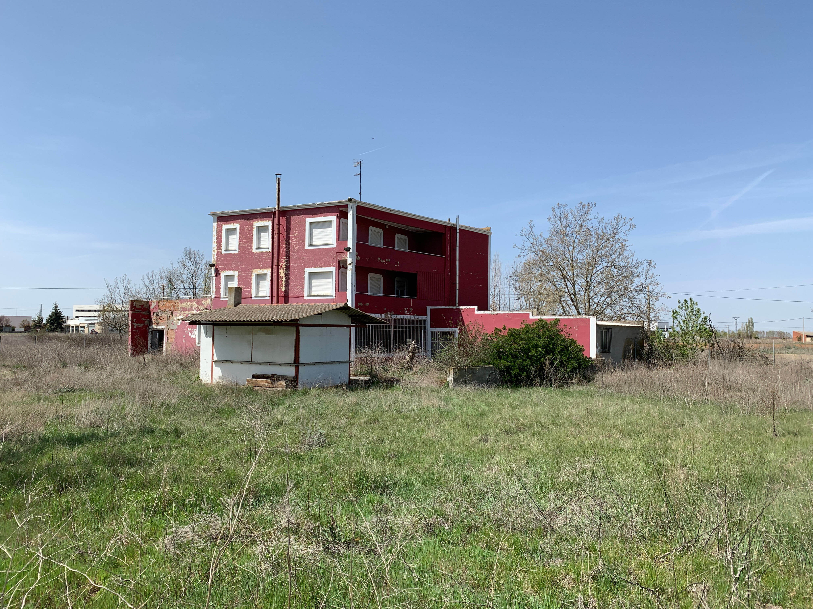
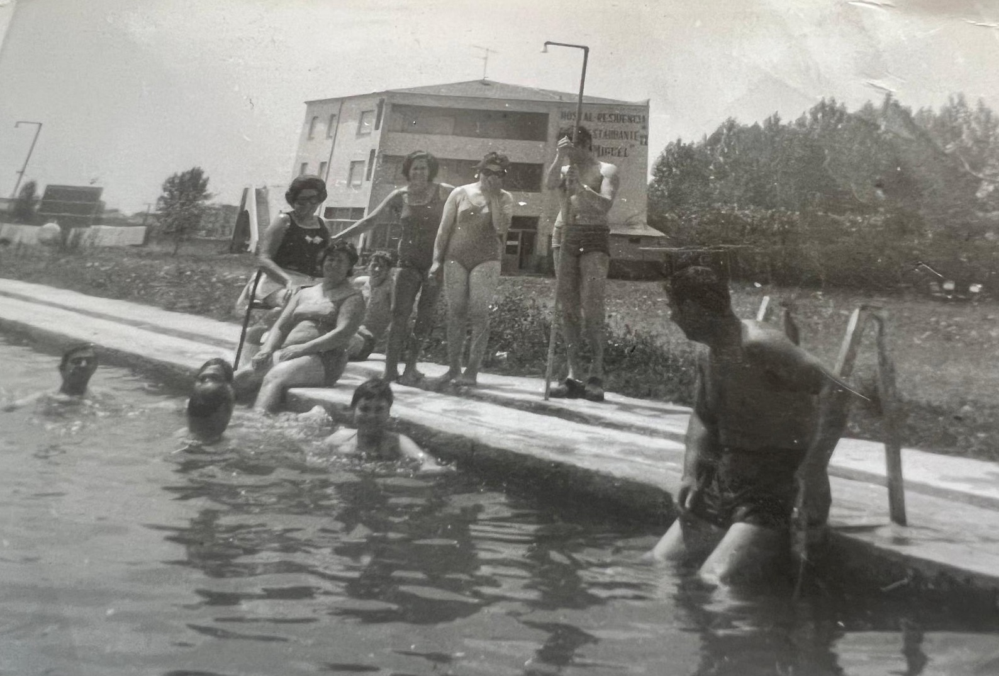
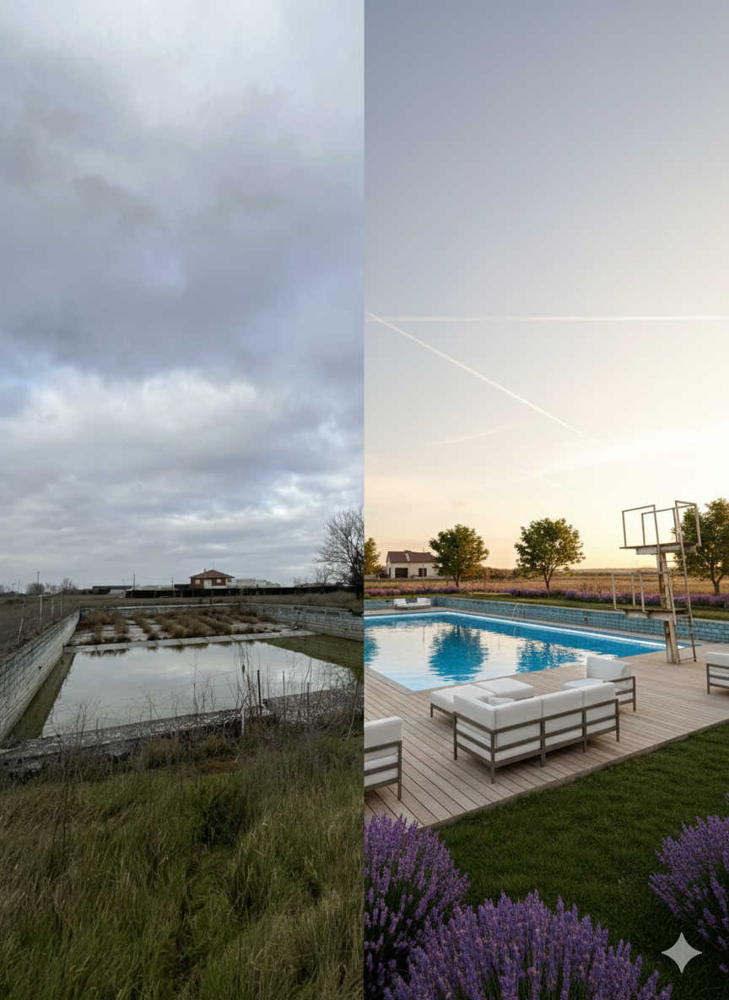

Antiguo Hostal San Miguel
Disponible en Alquiler a Largo Plazo | Marzo 2026
Resumen Ejecutivo
Nos complace presentar Antiguo Hostal San Miguel, un activo urbano estratégico disponible en alquiler a largo plazo en Santa María del Páramo, León. Esta propiedad ofrece un potencial significativo para su conversión en servicios modernos de apoyo industrial, instalaciones de formación, operaciones logísticas u oficinas de proyecto, con múltiples posibilidades de uso (residencial, oficinas, servicios auxiliares), particularmente adecuado para apoyar el creciente clúster de tecnología aeroespacial y defensa en la región de Castilla y León.
Posicionamiento Estratégico: Ubicado cerca de grandes zonas de desarrollo industrial (corredor industrial de Villadangos del Páramo), este activo está idealmente situado para servir como instalación satélite para apoyo de fabricación, formación, logística y servicios de coordinación operativa.
Descripción del Activo
Estado Actual y Potencial de Desarrollo
La propiedad requiere una renovación integral y modernización para activar su potencial completo. A continuación se presenta una comparación del estado actual y diversas propuestas de rehabilitación arquitectónica:



Alcance de Reforma: Evaluación estructural completa, mejora de sistemas MEP, modernización de interiores, cumplimiento de accesibilidad y conversión de uso adaptativo a estándares industriales/comerciales contemporáneos. Los términos de alquiler flexible incluyen provisión para inversión de capital en fases.
Historia y Legado
El Hostal San Miguel fue construido en 1968, en una época de transformación y crecimiento para Santa María del Páramo. Durante décadas, este establecimiento fue más que un simple hostal: fue un punto de encuentro para viajeros, familias y celebraciones, un lugar donde se forjaron memorias y se tejieron historias de la comunidad leonesa.

Un Oasis en el Páramo
En su momento de esplendor, el Hostal San Miguel destacaba por ofrecer una amenidad inusual para la España rural de aquellos años: una piscina olímpica de 50 metros. Este activo lo convirtió en destino de verano para familias de toda la provincia de León, un lugar donde generaciones de niños aprendieron a nadar y donde las tardes de agosto cobraban vida con risas y celebraciones.
En verano, el Hostal San Miguel llegó a atraer un turismo muy significativo: familias asturianas que venían a pasar sus vacaciones en régimen de pensión completa, convirtiendo el complejo en un pequeño "resort" rural y en un punto de encuentro estacional para la comarca. Este flujo turístico contribuyó significativamente a la economía local durante décadas.
Santa María del Páramo, situada en el corazón de la comarca de El Páramo leonés, ha sido históricamente un cruce de caminos y un núcleo comercial agrícola. El hostal contribuyó durante años a la vida económica y social del municipio, acogiendo eventos, banquetes y reuniones que fortalecieron el tejido comunitario.
Un Nuevo Capítulo: Hoy, el Antiguo Hostal San Miguel está listo para escribir una nueva historia. Con su sólida estructura, su generosa parcela y su ubicación estratégica, este activo puede transformarse en un espacio moderno que sirva a las necesidades industriales, corporativas y comunitarias del siglo XXI, mientras honra el legado de hospitalidad y servicio que lo definió durante décadas.
Espacios Interiores


Amenidad Singular: Piscina Olímpica
La propiedad incluye una piscina de 50 metros de estilo olímpico, un activo raro en la zona rural de León que ofrece posibilidades significativas de rehabilitación y uso recreativo corporativo:


Opciones de Uso: Esta amenidad puede ser (1) rehabilitada para bienestar de empleados y recreación corporativa, (2) convertida a uso alternativo o desmantelada según necesidades operacionales, o (3) mantenida como amenidad adicional generadora de ingresos. Se recomienda evaluación de viabilidad durante fase de debida diligencia técnica.
Especificaciones de la Propiedad
Parcela Principal (Urbana – Oferta Principal)
| Especificación | Detalles |
|---|---|
| Referencia Catastral | DISM03100TM79C0001QB |
| Localización Catastral | CR LEON 1031, 24240 Santa María del Páramo (León) |
| Clasificación | Urbano |
| Uso Principal (Catastro) | Hostelería / Ocio |
| Superficie de Parcela (Gráfica) | 10.089 m² |
| Superficie Construida | 786 m² |
| Año de Construcción | 1968 |
| Estado Actual | Cerrado; Renovación Integral Requerida |
| Titularidad | Privada; Sin Cargas (Sin Hipotecas/Gravámenes) |
Parcela Complementaria (Opcional – Rústica)
| Especificación | Detalles |
|---|---|
| Referencia Catastral | 24160A102000600000HJ |
| Clasificación | Rústico / Agrario |
| Superficie de Parcela | 1.886 m² |
| Uso Principal | Agrario (Labor / Cultivo Regado) |
| Disponibilidad | Disponible como opción para expansión o uso mixto (sujeto a aprobación de zoning municipal) |
Localización y Accesibilidad
Posición Geográfica
Municipio: Santa María del Páramo, Provincia de León
Región: Castilla y León, España
Acceso por Carretera Principal: Carretera CL-622 (frente directo)
Proximidad a Centro Regional: Corredor industrial de Villadangos del Páramo (cercano)
Características de Acceso a la Parcela
- Acceso vehicular directo desde CL-622
- Zona de entrada asfaltada junto a fachada
- Amplias áreas de aparcamiento en superficie
- Capacidad para acceso de vehículos pesados/camiones
- Terreno plano y manejable
Infraestructura y Servicios
La propiedad históricamente funcionó como instalación de hostelería y restauración con servicios complementarios completos. Se requiere verificación de infraestructura durante la debida diligencia:
| Servicio | Estado |
|---|---|
| Suministro Eléctrico | Históricamente presente; se requiere verificación de capacidad |
| Suministro de Agua y Agua Potable | Históricamente conectado; se recomienda pruebas |
| Saneamiento/Aguas Residuales | Históricamente conectado; se requiere evaluación |
| Fibra Óptica/Internet | A confirmar en inspección técnica |
| Gas Natural | Sujeto a evaluación de disponibilidad municipal |
Nota sobre Infraestructura: Todos los servicios requieren inspección profesional y potenciales mejoras para cumplir estándares operacionales industriales/comerciales modernos. Los términos de alquiler pueden acomodar inversión de capital en fases para modernización de infraestructura.
Propuesta de Valor Estratégica
Esta propiedad está posicionada como instalación de soporte satélite para el emergente clúster de fabricación aeroespacial y defensa en Castilla y León, con flexibilidad para múltiples usos (residencial, oficinas, servicios), particularmente para apoyar:
Apoyo Operativo: Oficinas de proyecto, coordinación logística, staging de equipos, gestión de inventarios
Servicios de Personal: Instalaciones de formación, educación técnica, alojamiento de mano de obra temporal, catering
Apoyo de Fabricación: Ensamblaje ligero, pruebas, aseguramiento de calidad, almacenamiento, coordinación de subcontratistas
Funciones Corporativas: Oficinas ejecutivas, recepción de clientes, instalaciones de conferencias, alojamiento de visitantes
Términos y Estructura de Alquiler
| Parámetro | Oferta |
|---|---|
| Modalidad de Alquiler | Alquiler a largo plazo de edificio completo (negociación flexible de plazo) |
| Condición de la Propiedad | Disponible para reuso adaptativo / renovación |
| Reforma / Inversión de Capital | Arreglos flexibles (financiado por inquilino, propietario, o modelos compartidos) |
| Inicio de Alquiler | Flexible; puede acomodar cronograma de planificación y construcción |
| Precio | Basado en mercado; sujeto a alcance final y plazo de alquiler (a negociar) |
| Titularidad de Propiedad | Se mantiene con propietario original; sin cargas |
| Usos Disponibles | Sujeto a aprobación de zoning municipal; alta flexibilidad para operaciones de apoyo industrial y otros usos comerciales/residenciales |
Flexibilidad del Acuerdo: El propietario está abierto a estructuras creativas de alquiler, incluyendo períodos de carencia para obras de renovación, commencement de alquiler en fases, y modelos de inversión de capital compartido para acomodar inquilinos estratégicos.
Para Más Información
Sergio Castellanos
Teléfono: +34 626 424 717
Email: Sergio.castellanoslopz@gmail.com
Santa María del Páramo, León | España
Localización de la Propiedad
Santa María del Páramo
Provincia de León, Castilla y León
Acceso por Carretera CL-622
Acceso directo desde corredor regional principal
Cerca de zona industrial de Villadangos
CONFIDENCIAL – SOLO PARA PARTES INTERESADAS
Antiguo Hostal San Miguel | Santa María del Páramo, León | Marzo 2026